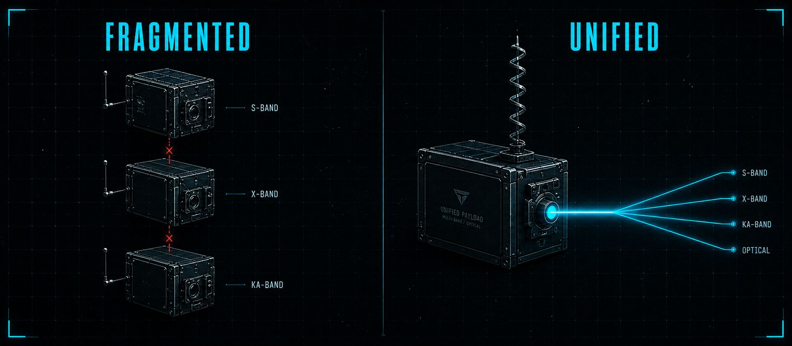

CAELUM
Satellite communications and sensing. Unified. CubeSat-native. Multi-domain.
Wideband RF synthesis. Optical transport. Static laser pointing. Deployable antenna. One payload.
CURRENT PAYLOADS FORCE
A FUNCTION PER SYSTEM ARCHITECTURE
A CubeSat or smallsat that needs to operate across S-band, X-band, Ka-band, and optical today requires a separate subsystem for each function. Each subsystem has its own antenna, power budget, thermal load, pointing system, and integration risk. The mass and volume penalty of stacking multiple single-function systems is prohibitive at smallsat scale.
The consequence is mission scope compression. Programs choose between a capable large satellite that costs hundreds of millions, or a smallsat that does one thing. The middle ground does not commercially exist.
DARPA documented this gap directly. Their Space-BACN program, budgeted at $31.9M in FY2023 and $32.1M in FY2024, exists because government and commercial LEO constellations cannot talk to each other. That is not a technology problem. It is an architecture problem.

WHAT IS NEW
WHY IT WORKS
Caelum delivers a unified multi-band communications and sensing payload validated at TRL 4. The architecture collapses four separate subsystems into one CubeSat-native platform.
Wideband RF Synthesis - Multi-Band in One Unit
A tunable multi-tone, multi-band high-frequency synthesizer generates signals across Q-band (37–42 GHz), V/W-band (71–76 GHz), and K-band (18–26 GHz) from a single unit using harmonic generation. Conventional architectures require separate oscillator chains per band. Caelum eliminates that. Noise below –70 dBc. Crystal oscillator frequency stability.
Optical Transport - Single Beam, Multiple RF Bands
A tunable diode laser combined with wavelength division multiplexing encodes multiple independent RF bands onto a single laser beam. Each RF carrier operates at a different optical wavelength. The result: multiple microwave bands transmitted simultaneously, dramatically fewer transceivers, reduced power consumption, and higher data throughput per unit mass.
Static Laser Pointing - No Moving Parts
Caelum uses a VCSEL/Photodetector array with a compact lens system. No fast-steering mirrors. No gimbals. No vibration isolation platform. Nanosecond reaction time. Spot size on Earth reduced by 8×. Laser output power reduced by 64× versus body-pointing. Applicable to LEO and low lunar orbit.
Deployable Antenna - Integration Without Mass Penalty
A lightweight self-deployable helical antenna stows at under 2 grams and under 1.2 cm³, then self-deploys in orbit. Performance at or above 10 dBi gain. Demonstrated in S, X, and Ka band. Integrates into thin-film solar arrays. In 16×16 array configurations: equivalent performance to traditional antenna arrays at one-tenth the size and mass.
CAELUM
SPECIFICATIONS
All parameters reflect TRL 4 - component and breadboard validation in laboratory environment. Architecture-level design parameters, not flight-qualified specifications.
| Division | Ibom Space - Caelum Communications & Sensing |
| Architecture | Unified multi-band RF + optical transport + static laser pointing + deployable antenna. Single CubeSat-native payload. |
| RF Frequency Coverage | K-band (18–26 GHz), Q-band (37–42 GHz), V/W-band (71–76 GHz). Tunable. Multi-tone simultaneous transmission. |
| RF Noise Floor | < –70 dBc. Crystal oscillator frequency stability. |
| Optical Pointing Method | Static VCSEL/Photodetector Array. No moving parts. No vibration isolation platform required. |
| Pointing Response Time | Nanosecond timescale. |
| Laser Power Reduction | 64× reduction vs. body-pointing. Spot size on Earth reduced 8×. |
| Antenna Mass | At or below 2 grams per element. |
| Antenna Stowed Volume | At or below 1.2 cm³. |
| Antenna Gain | At or above 10 dBi. Demonstrated in S, X, and Ka band. |
| Array Performance | Equivalent to traditional arrays at 1/10 the size and mass in 16×16 configurations. |
| Target Orbit | LEO, Low Lunar Orbit (LLO), and deep space mission profiles. |
| TRL Status | TRL 4 - Component and breadboard validation. Proof of concept demonstrated. |
THE PROGRAMS
THAT CARE
Caelum is relevant to any program that needs persistent multi-domain communications and sensing from a smallsat platform without paying the mass, volume, or cost penalty of multiple single-function subsystems.
DARPA and DoD program offices evaluating multi-domain sensing and communications architecture for proliferated LEO. Space-BACN confirmed the interoperability gap is real and funded.
Space Development Agency and Space Force programs building the Proliferated Warfighter Space Architecture. Multi-band optical links without moving parts are a structural requirement of PWSA-class missions.
SOCOM and Tradewinds operators who need persistent ISR communications, optical downlink, and broadband from a platform that can also maneuver.
Commercial smallsat constellation operators hitting the SWaP wall on communications payload design. Multi-band coverage from a single payload changes the unit economics of constellation deployment.